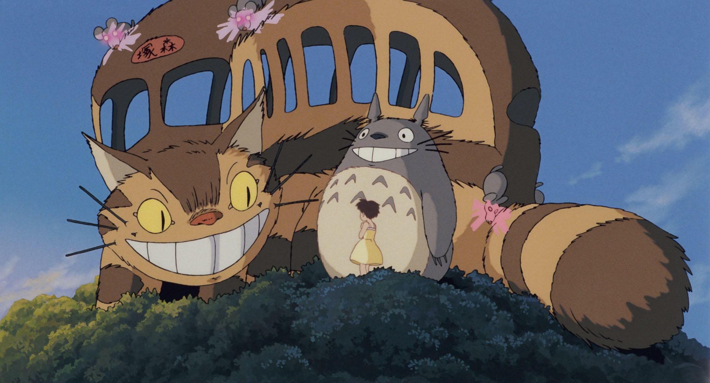
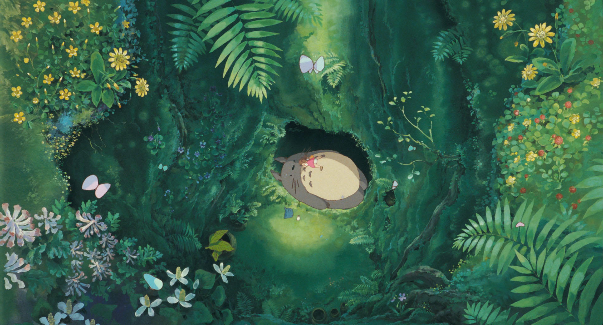

一辆会奔跑的奇迹
猫巴士 ネコバス
明亮的车窗、宽宽的笑脸，还有好多只跑得飞快的脚。翻过田野与树梢，把思念送到目的地。

有一种夏天，藏在田埂、旧屋和大樟树的影子里。小月与小梅跟随风的方向，遇见了只有愿意相信的人才能看见的邻居。
这封来信，把电影中的绿意、雨声和奇遇收藏起来。慢慢看，慢慢走，像第一次推开那扇通往森林的门。
SIX POSTCARDS FROM A SUMMER
六帧风景，一段不必赶路的时光。
点击画面，展开这张电影明信片。
偶尔迷路也没关系，
说不定，会遇见龙猫。
YOUR NEIGHBOURS IN THE FOREST
有一点神秘，
有好多好多温柔。
住在森林深处的大家伙，有毛茸茸的肚子、尖尖的耳朵和标志性的笑容。它陪你等雨，也带你看见夜空与种子的秘密。

明亮的车窗、宽宽的笑脸，还有好多只跑得飞快的脚。翻过田野与树梢，把思念送到目的地。
黑乎乎、圆滚滚，眼睛却亮晶晶。躲在旧屋的阴影里，悄悄提醒你：不起眼的地方，也有魔法。
THE CATBUS IS WAITING FOR YOU
点选站点，换一扇窗看世界。
这是一份受电影启发的想象旅行地图。
推开木门，把夏天搬进家里。先向屋檐和庭院打个招呼，再听听角落里有没有小精灵的脚步。
A LETTER TO YOUR INNER CHILD
留给一阵风，一颗种子，一片云。
也留给那个会因为遇见龙猫，而开心很久的自己。
今天的森林来信，已送达。